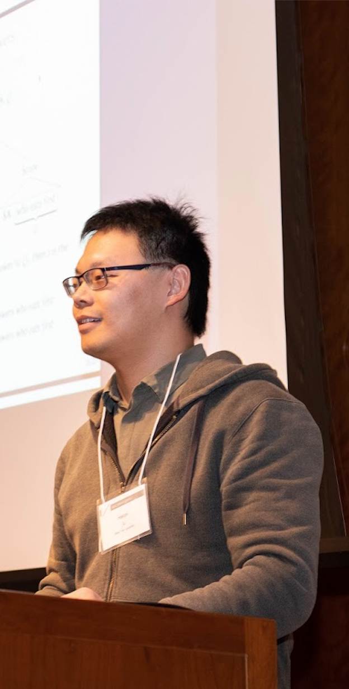

I'm currently a lecturer at Guangdong University of Foreign Studies (GDUFS). I got my PhD from Department of Linguistics, New York University (NYU) and Master's from The Chinese University of Hong Kong (CUHK) . I also visited Department of Linguistics, Rutgers in 2014-2015 and Department of Linguistics, University of California, Santa Cruz (UCSC) in 2019-2020.
My research interest lies primarily in natural language semantics, with an emphasis on (word and sentence) meaning as embedded in discourse. More specifically, I have worked on Chinese languages and English in the following areas:
Although the majority of my work is done with tools in theoretical semantics and syntax, I have started recent collaborative projects incorporating other methods in contemporary linguistics, including experimental linguistics and corpus study.
I'm from Ankang, a lovely small town in south China. The logo next to my Chinese name is a wadang (roof accessory in ancient Chinese architecture) engraved with a Vermillion Bird (similar to the mythical phoenix), which was believed to guard the South in east asian countries.
